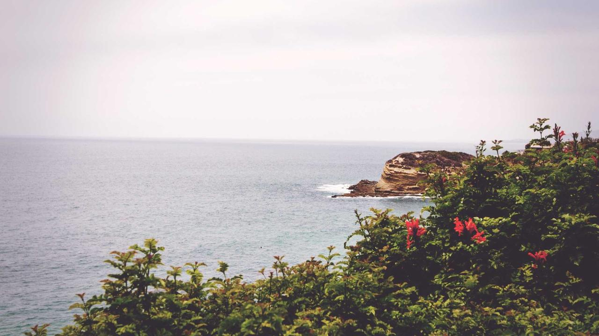

全球艺术动态
60 条精选新闻 · 六大赛道各 10 条 · 7 个国外源为主 · 所有链接指向真实原文
Met Museum Consulted With Jewish Leaders Over Exhibition for Controversial Fashion Designer John Galliano
来源：ARTnews标签：展览


Divine Alphabets: Two Los Angeles Exhibitions on Spirituality
来源：Artforum标签：展览


Curators Selected for the 2nd Edition of the Bogotá Biennial
来源：Artforum标签：展览


Whitney Biennial 2026, Whitney Museum of American Art/ New York
来源：Flash Art标签：展览

台中艺博会，为新兴藏家提供收藏管道
来源：雅昌标签：展览

杨恒个展 从黄土地中萌芽的情感绘画
来源：雅昌标签：展览

【艺术播报】徐悲鸿三件巨制同框展出
来源：雅昌标签：展览

Icon Link Plus Icon
来源：ARTnews标签：事件

Icon Link Plus Icon
来源：ARTnews标签：事件

Icon Link Plus Icon
来源：ARTnews标签：事件

Icon Link Plus Icon
来源：ARTnews标签：事件

Icon Link Plus Icon
来源：ARTnews标签：事件

Icon Link Plus Icon
来源：ARTnews标签：事件

Subscribe TO ART IN AMERICA
来源：ARTnews标签：事件
ARTnews Recommends
来源：ARTnews标签：事件
White House Proposes Smallest Smithsonian Budget in Years and Cutting Full-Time Staff by 6 Percent
来源：ARTnews标签：事件
Michelle Grabner Donates More Than 2,000 Artworks to Wisconsin’s Kohler Arts Center, Now the Most Comprehensive Repository of Her Work
来源：ARTnews标签：事件
Cactus Jack 联手《The Odyssey》与 IMAX 推出独家胶囊系列
来源：Hypebeast标签：作品发布
Le Labo 推出致敬北京四合院的「SHIU 25」City Exclusive 香氛
来源：Hypebeast标签：作品发布
Daimaru Matsuzakaya 推出《Final Fantasy X》25周年纪念胶囊系列
来源：Hypebeast标签：作品发布
Bode 携手 Yale School of Music 推出百年纪念胶囊系列
来源：Hypebeast标签：作品发布
lululemon 发布深度共谈影片《遇见汪顺》
来源：Hypebeast标签：作品发布
新发布！2024年度艺术市场报告
来源：雅昌标签：作品发布
Supreme x Martine Rose x Nike Dunk Low「Mike Tyson」联乘鞋款曝光
来源：Hypebeast标签：品牌合作
Nike 与 Victor Wembanyama 再签多年合约，首款签名球鞋即将登场
来源：Hypebeast标签：品牌合作
UPPERVOID x KARMA8A「SEND IT」街头抱石联名系列发布
来源：Hypebeast标签：品牌合作
Seiko 5 Sports x Honda 推出 Motocompo 45 周年限量联名腕表
来源：Hypebeast标签：品牌合作
Nike 以 2026/27 球衣系列重新演绎 AC Monza 传统
来源：Hypebeast标签：品牌合作
Top 200 Collectors
来源：ARTnews标签：交易
The World's Largest Painting Sold for $62 M. in 2021 to Benefit Children's Charities, But They Have Yet to…
来源：ARTnews标签：交易
Roland Auctions NY
来源：ArtDaily标签：交易
北京保利拍卖丨春光好——中国书画部三城
来源：雅昌标签：交易
北京保利拍卖丨沉雄远淡，岂识寻常——明
来源：雅昌标签：交易
保利拍卖 • 精品回顾丨中国古董珍玩：
来源：雅昌标签：交易
北京保利拍卖2022春拍公开征集新增福
来源：雅昌标签：交易
嘉德四季第60期拍卖会即将启幕丨收获春
来源：雅昌标签：交易
Entertainment 娱乐
来源：HB·POPMART标签：艺术潮玩
POP MART 联手 Sony Pictures 正式启动《Labubu》真人电影项目
来源：HB·POPMART标签：艺术潮玩
UNIQLO 再度携手 POP MART 扩展「The Monsters」系列
来源：HB·POPMART标签：艺术潮玩
Hypebeast Newsroom
来源：HB·POPMART标签：艺术潮玩
走进「Letting Go... Holding On...」Crybaby 特展·上海站
来源：HB·POPMART标签：艺术潮玩
走进 THE MONSTERS 十周年全球巡展上海站
来源：HB·POPMART标签：艺术潮玩
「Labubu 热」退烧？POP MART 股价应声插水
来源：HB·POPMART标签：艺术潮玩
Labubu 如何避免成为下一个 BE@RBRICK？
来源：HB·POPMART标签：艺术潮玩
POP MART x UNIQLO UT 最新联名系列「The Monsters」发布
来源：HB·POPMART标签：艺术潮玩
THE MONSTERS 森林秘密基地登陆杭州嘉里中心
来源：HB·POPMART标签：艺术潮玩
The 30 Best Art Museums in the US
来源：ARTnews标签：事件
Terms of Service
来源：ARTnews标签：事件
Maximilíano Durón
来源：ARTnews标签：事件
Met Museum Quietly Hangs a Leonardo da Vinci Painting, On Loan from Ken Griffin: ‘A Little Picture, Of Large-Scale Importance’
来源：ARTnews标签：事件
Gagosian Gives Up London and Basel Spaces as Mega-Galleries Rethink Their Footprints
来源：ARTnews标签：事件
Taryn Simon's Guggenheim Show Will Fill Rotunda with Entirely New Body of Work for First Time in Museum's…
来源：ARTnews标签：事件
Na Kim Wants You to Look Up
来源：ARTnews标签：事件